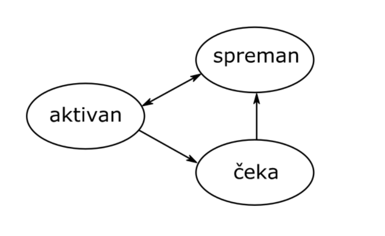
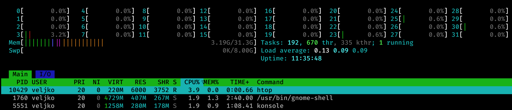
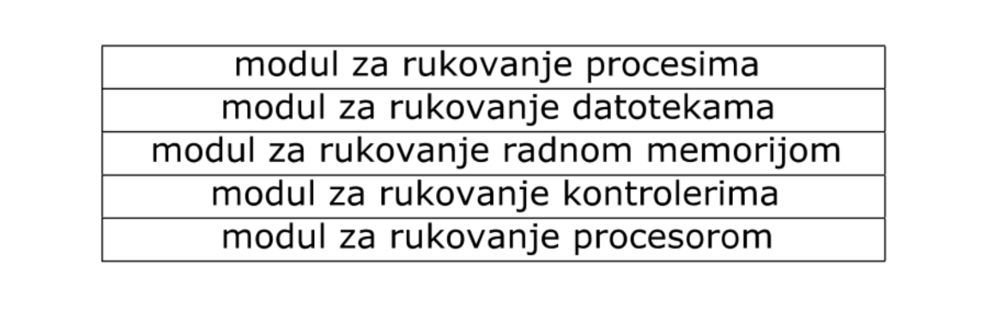
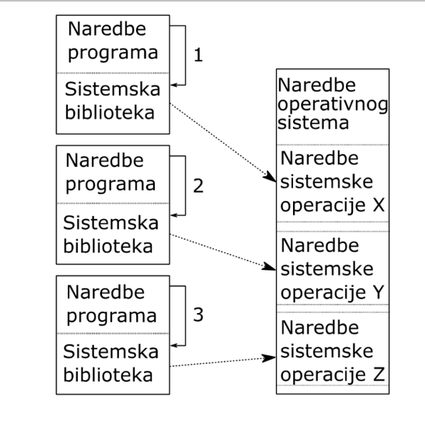

Veljko Petrović
Februar, 2023
Kako se organizuje predmet
| Broj bodova | Ocena |
|---|---|
| 51-60 | 6 |
| 61-70 | 7 |
| 71-80 | 8 |
| 81-90 | 9 |
| 91-100 | 10 |
| Obaveza | Opis | Bodovi |
|---|---|---|
| Test T1234 | Konkurentno programiranje | do 40 |
| Složeni oblik vežbi SOV | Konkurentno programiranje (konkurentni problem) | do 30 |
a) **0** b) **1** c) 2 d) SLOBODAN
e) ZAUZET f)-1 g) 3Kako biti spreman za vežbe i praćenje primera sa predavanja
Vrtoglava tura operativnog sistema




Šta smo naučili?